Thuyết Tương Ðối
Khi nghiên cứu những vật thể chuyển động với vận tốc rất lớn gần bằng với vận tốc ánh sáng, người ta thấy rằng cơ học cổ điển của Newton không còn thích hợp nữa. Do đó cần thiết phải xem lại các khái niệm về không gian và thời gian. Việc xem xét nầy thực hiện trong thuyết tương đối.
I. PHÉP BIẾN ÐỔI GALILEO (GALILEAN TRANSFORMATION)
1. Hệ qui chiếu- Hệ tọa độ
Muốn xác định vị trí các chất điểm trong không gian thì ta phải biết vị trí tương đối của chúng so với các vật thể làm móc gọi là hệ qui chiếu. Hệ qui chiếu được gắn lên một hệ trục tọa độ.
Ví dụ hỆ trỤc tỌa đỘ Descartes 3 trỤc vuông góc chẲng hẠn, khi đó mỖi điỂm được đặt trưng bằng tập hợp ba số (x,y,z) ta gọi là các tọa độ của điểm đã cho. Theo thời gian, các điểm có thể dịch chuyển cho nên cần phải bổ sung thêm (tọa độ thời gian) để hình thành khái niệm sự kiện. Sự kiện là một hiện tượng mà nó được xác định bằng 4 tọa độ (x,y,z,t). Ðó là tọa độ của một điểm vũ trụ (một sự kiện) trong không gian 4 chiều. Một tập hợp các sự kiện xảy ra liên tục tạo thành đường vũ trụ.
Hệ qui chiếu gắn lên các vật tự do gọi là các hệ qui chiếu quán tính. Các hệ qui chiếu quán tính có thể chuyển động tương đối với nhau. Khái niệm chuyển động và đứng yên chỉ có tính chất tương đối.
Tính bất biến (Invariant): Khi chuyển từ hệ qui chiếu quán tính S sang hệ qui chiếu quán tính S hay ngược lại, nếu một đại lượng vật lý nào đó không đổi thì ta gọi đại lượng đó là bất biến (Inv) đối với phép chuyển đổi đó. Nếu một phương trình nào đó là đồng dạng trong phép chuyển đổi ta gọi phương trình đó là phương trình hiệp biến đối với phép chuyển đổi đó.
2. Phép biến đổi
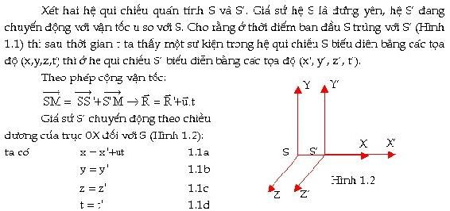
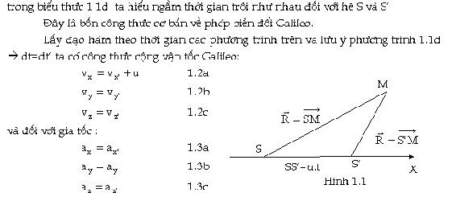
3. Các đại lượng bất biến
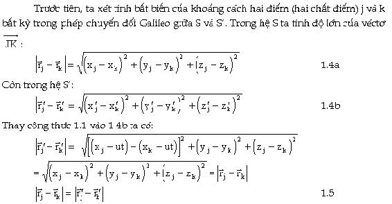
Như vậy khoảng cách hai chất điểm j và k trong phép chuyển đổi Galileo giữa S và S là bảo toàn. Từ sự bất biến của khoảng cách hai điểm ta suy ra là thể tích của một vật thể là bất biến. Vì khối lượng riêng là hằng số nên khối lượng của vật thể cũng là bất biến trong phép chuyển đổi Galileo giữa S và S.
Từ các phương trình 1.3 ta thấy gia tốc của một chất điểm là không đổi trong phép chuyển đổi Galileo giữa S và S
Bây giờ ta xét đến lực tương tác giữa các chất điểm.
Ta biết là lực tương tác giữa các hạt chỉ tùy thuộc vào khoảng cách r giữa chúng vì thế nếu xét lực tương tác F giữa hai hạt ta có thể viết biểu thức tổng quát:
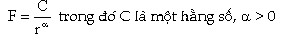
Vậy lực tương tác F giữa hai hạt cũng là bất biến trong phép chuyển đổi Galileo giữa S và S. Khi xét một hạt riêng biệt, tổng các lực do các hạt khác tác dụng lên nó là chỉ phụ thuộc vào các khoảng cách cho nên hoàn toàn như nhau trong hai hệ S và S. Vậy lực tổng hợp tác dụng lên một hạt bất kỳ cũng là bất biến trong phép chuyển đổi Galileo giữa S và S.
Cuối cùng kết hợp khối lượng và gia tốc của một hạt nào đó là không đổi trong phép chuyển đổi Galileo giữa S và S ta suy ra phương trình Ðịnh luật II Newton là phương trình hiệp biến đối với phép chuyển đổi S và S tức là bất biến. Chúng ta cũng có thể chứng minh phương trình Ðịnh luật III Newton là phương trình hiệp biến đối với phép chuyển đổi S và S.
Hãy tiếp tục xét phép biến đổi Galileo trong trường điện từ mà cụ thể là với ánh sáng để xem phép biến đổi Galileo có vận dụng một cách phù hợp không?
II THUYẾT TƯƠNG ÐỐI HẸP (SPECIAL RELATIVITY)
1. Những cơ sở thực nghiệm

2. Thí nghiệm Michalson-Morley
Cuối thế kỷ 19 đa số các nhà vật lý tin rằng vũ trụ được lắp đầy bởi một môi trường vật chất đặc biệt gọi là ether hỗ trợ cho sự lan truyền của sóng điện từ. Ðiều giả thuyết nầy dựa vào cơ sở là các sóng cơ học đều cần một môi trường trung gian để truyền tương tác. Aïnh sáng đi qua ether với tốc độ là c bằng nhau theo mọi hướng.


trong đó I1, I2 lần lượt là cường độ của hai tia sáng thành phần cùng đi vào ống ngắm G. Thí nghiệm được làm lại nhiều lần trong điều kiện người ta quay dụng cụ thí nghiệm theo những góc khác nhau so với trục OX nhưng vẫn giữ nguyên phương chuyển động của S so với S là OX.
Sự tính toán bằng công thức hợp tốc Galileo cho ta kết qủa là theo những góc khác nhau thì hiệu số pha của các tia sáng thành phần đi vào ống ngắm G là khác nhau. Tức là cường độ sáng tổng hợp trên màn giao thoa khác nhau.
Theo tính toán thì cường độ sáng tổng hợp trong ống ngắm G sẽ thay đổi rất lớn, rất dễ quan sát khi mà ta quay dụng cụ thí nghiệm theo những góc khác nhau. Nhưng thực tế người ta không quan sát được sự thay đổi cường độ sáng khi quay dụng cụ thí nghiệm. Tức là hiệu số pha và hiệu thời gian truyền của hai tia sáng là như nhau.
Thí nghiệm nầy có thể chứng tỏ ánh sáng truyền theo mọi phương với cùng vận tốc là c chứ không tuân theo công thức cộng Galileo. Không thể có vận tốc lớn hơn c.
3-Thí nghiệm Sitter về quan sát hệ sao đôi
Năm 1913 de Sitter đã bác bỏ phép cộng vận tốc Galileo đối với ánh sáng trên cơ sở quan sát chuyển động của các ngôi sao đôi.
Sao đôi là hai ngôi sao ở gần nhau, chuyển động xung quanh một trọng tâm. Nếu một ngôi sao nặng hơn ngôi sao kia rất nhiều thì ngôi sao nhẹ sẽ chuyển động xung quanh ngôi sao nặng như một vệ tinh. Ðể đơn giản ta xem ngôi sao nặng là đứng yên còn ngôi sao nhẹ chuyển động xung quanh với vận tốc v (Hình 1.4).

S là khoảng cách từ ngôi sao đến bề mặt trái đất.

Ta có thể chọn được một số hệ ngôi sao đôi thỏa tính chất trên để quan sát. Nhưng trên thực tế ta không bao giờ quan sát được. Như vậy không thể chấp nhận phép cộng vận tốc Galileo cho ánh sáng.
4. Thuyết tương đối hẹp của Einstein
Nguyên lý tương đối trong cơ học Newton nói rằng các hiện tượng cơ học đều xảy ra như nhau trong mọi hệ qui chiếu quán tính nhưng không nói rõ các hiện tượng khác như là nhiệt, điện, từ có xảy ra như nhau trong mọi hệ qui chiếu quán tính? Theo phần điện từ trường ta thấy tương tác từ xảy ra chủ yếu là do dòng điện tức là do chuyển động của các hạt mang điện. Như vậy có thể trong các hệ qui chiếu quán tính khác nhau các hiện tượng điện từ sẽ xảy ra khác nhau. Nhiều thí nghiệm được thực hiện với các hệ qui chiếu quán tính khác nhau với mục đích tìm ra một hệ qui chiếu quán tính mà ở đó tốc độ ánh sáng khác hẳn với tốc độ ánh sáng trong các hệ qui chiếu quán tính khác. Nhưng những thí nghiệm đó không đạt được kết qủa.
Năm 1905 Einstein phát biểu nguyên lý tương đối về sự bình đẳng của các hệ qui chiếu quán tính cụ thể bằng hai tiên đề sau:
Tiên đề 1: Mọi hiện tượng Vật lý (Cơ, nhiệt, điện, từ...) đều xảy ra như nhau trong các hệ qui chiếu quán tính. Ðiều nầy cho thấy các phương trình mô tả các hiện tượng tự nhiên đều có cùng dạng như nhau trong các hệ qui chiếu quán tính.
Tiên đề 2: Tốc độ ánh sáng trong chân không là một đại lượng không đổi trong tất cả các hệ qui chiếu quán tính.
Giả thuyết 1 phủ định sự tồn tại của một hệ qui chiếu quán tính đặc biệt ví dụ như một hệ qui chiếu đứng yên thật sự. Nói cách khác mọi hệ qui chiếu quán tính là hoàn toàn tương đương nhau. Từ tiên đề nầy các nhà khoa học khẳng định không thể tồn tại một môi trường ether truyền sóng điện từ (ánh sáng) với một vận tốc khác biệt các hệ qui chiếu khác.
Phép biến đổi GALILEO làm cho các phương trình NEWTON bất biến. Điều đó không có gì xung đột với giả thuyết thứ nhất của Einstein tuy nhiên khi xét đến thời gian thì trong thực tế định luật Newton thứ hai sẽ phải bổ sung lại.
Dựa vào giả thuyết 2 ta có thể giải thích thí nghiệm Michelson và thí nghiệm Sitter vì vận tốc truyền ánh sáng là như nhau theo mọi phương nên không thể sử dụng công thức cộng vận tốc Galileo cho ánh sáng.
III. TÍNH ÐỒNG BỘ (SYNCHRONIZATION)
Theo cơ học Newton thì tất cả các đồng hồ có thể được cho đồng bộ như nhau bất kể sự chuyển động tương đối của các hệ. Ðiều nầy được chứng minh từ phép biến đổi Galileo.
Ðồng bộ là gì: Ví dụ có hai đồng hồ chạy hoàn toàn đúng như nhau. Ta đặt một cái tại trái đất, cái còn lại đặt trên tàu vũ trụ quay quanh mặt trăng. Vào cùng một thời điểm nào đó cả hai được điều chỉnh cùng một gía trị như nhau, sau đó nhiều tháng, nếu hai đồng hồ cùng chỉ một giá trị như nhau vào cùng một thời điểm quan sát ta nói hai đồng hồ đó là đồng bộ.
1. Sự chậm lại của thời gian (TIME DILATION)
Theo giả thuyết Einstein người ta có thể kết luận được rằng: các đồng hồ đồng bộ trong cùng một hệ qui chiếu quán tính thì sẽ không đồng bộ khi đặt nó trong hai hệ qui chiếu quán tính khác nhau ( Một hệ qui chiếu đang đứng yên còn một hệ qui chiếu đang chuyển động tương đối so với hệ đứng yên)
Ta quay lại thí nghiệm hai hệ qui chiếu quán tính S và S trong đó S đi ra xa S theo chiều dương OX với vận tốc u. Trong hệ qui chiếu S ta có đặt một nguồn sáng mà bóng đèn sẽ phát sáng vào thời điểm ban đầu t =0 cũng là lúc S trùng với S. Ta đặt trên trục OY một gương phẳng M cách S một đoạn là L (ta sẽ nói sau là trong hệ qui chiếu S thì khoảng cách nầy là L).
Với người quan sát đứng trong S, khi một xung sáng phát ra theo trục OY đến gương rồi bị phản xạ trở lại mất một khoảng thời gian:


Sự trể về thời gian trong thí nghiệm của hạt sơ cấp thì rất dể quan sát bởi vì hạt chuyển động với vận tốc lớn gần vận tốc ánh sáng, đồng thời nó có thời gian sống ngắn. Tuy nhiên trong thế giới vĩ mô sự trễ về thời gian là rất khó đo lường. Một sự đo đạc chính xác đã được thực hiện tại trạm quan sát Nava của Mỹ để chứng tỏ sự đúng đắn của lý thuyết tương đối hẹp.
2. Sự không đồng bộ về thời gian
Sự chậm lại về thời gian của một đồng hồ trong các hệ qui chiếu quán tính đang chuyển động với vận tốc gần vận tốc ánh sáng so với các đồng hồ trong các hệ qui chiếu quán tính đứng yên là một minh chứng về sự không đồng bộ của thời gian của các hệ qui chiếu quán tính đứng yên và chuyển động. Sự không đồng bộ về thời gian chỉ ra rằng trong phép biến đổi Galileo không thể chấp nhận sự đồng nhất về thời gian trong hai hệ qui chiếu quán tính đang chuyển động với nhau (t =t). Chỉ khi vận tốc chuyển động tương đối là nhỏ thì ta mới có thể vận dụng phép biến đổi Galileo.
IV. ÐỘ DÀI TRONG HỆ QUI CHIẾU CHUYỂN ÐỘNG
1. Ðộ dài theo phương chuyển động
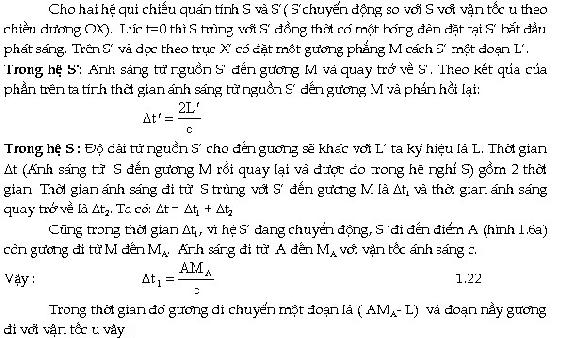
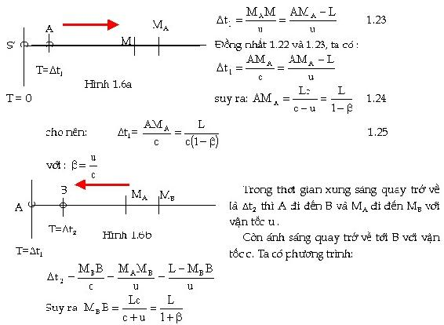
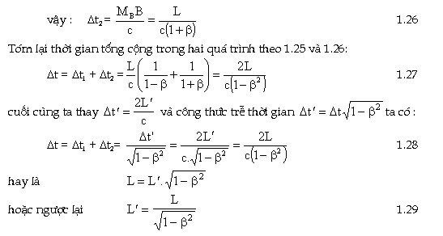
Phương trình trên cho ta sự thay đổi độ dài khi quan sát cùng một vật trong các hệ qui chiếu qúan tính khác nhau. Thực tế muốn quan sát độ dài một vật ta phải đứng trong hệ qui chiếu gắn với vật đó (hệ S) vậy khi ra ngoài hệ S(đứng ở S) ta thấy độ dài của vật đó thực sự co lại nếu S chuyển động với vận tốc u rất lớn so với S (có thể dùng một máy ảnh kiểm tra sự kiện đó)
Kết luận: độ dài của một vật nằm dọc phương chuyển động của hai hệ qui chiếu quán tính xét trong hệ qui chiếu đứng yên thì ngắn hơn độ dài của vật đó nếu ta xét trong hệ qui chiếu chuyển động.
Chú ý cũng giống như sự trễ về thời gian, sự co lại về độ dài chỉ ảnh hưởng khi mà vận tốc chuyển động khá lớn còn ở tốc độ âm thanh 340 m/s thì sự chênh lệch độ dài là không đáng kể.
2. Ðộ dài vuông góc với phương chuyển động:
Người ta tiến hành thí nghiệm như sau: Cho hai cây thước cùng độ dài 1 m, một thước đặt thẳng đứng trên mặt đất, thước còn lại đặt thẳng đứng trên một xe lăn đang chuyển động theo phương ngang với vận tốc u (gần vận tốc ánh sáng) và hai đầu có gắn hai thanh đánh dấu vị trí. Khi thước có đánh dấu đi ngang qua thước cố định nó sẽ vạch lại kích thước của nó lên trên thước cố định.
Sau thí nghiệm người ta thấy kích thước của cả hai cây thước luôn luôn trùng nhau khi hai thước đứng yên và cả khi một thước đang chuyển động với vận tốc tương đối (gần vận tốc ánh sáng) so với thước kia.
Chúng ta rút ra kết luận rằng chiều dài của các vật thể nằm theo các phương vuông góc chuyển động của hai hệ qui chiếu quán tính sẽ không có sự co giản về độ dài.
V. PHÉP BIẾN ÐỔI LORENTZ ( LORENTZ TRANSFORMATION)
1. Công thức Lorentz về biến đổi toạ độ
Theo thuyết tương đối Einstein thì hai đồng hồ là không đồng bộ khi đặt trong hai hệ quán tính khác nhau. Vậy trong công thức biến đổi Galileo không thể chấp nhận hệ thức t=t nói cách khác, phương trình liên hệ tương đối phải có công thức liên quan về thời gian và không gian trong hai hệ S và S.
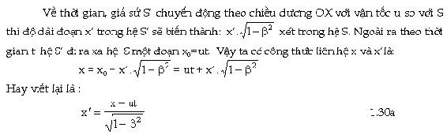
Theo các trục OY, OZ thì độ dài theo phương vuông góc với phương chuyển động là không đổi vậy ta có:
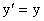
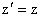
Ðể tìm công thức biến đổi về thời gian ta xét một bóng đèn lúc t=0 bắt đầu phát sáng tại vị trí hệ S trùng với hệ S. Trong hệ S ánh sáng phát ra theo sóng cầu với vận tốc c, sau thời gian t bán kính của hình cầu tương ứng là ct cho nên ta có:
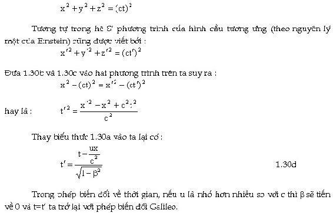
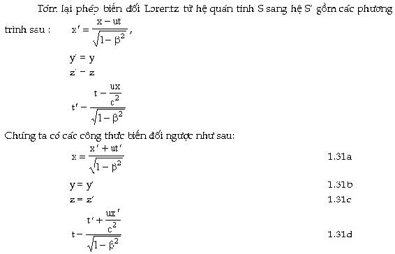
Chính nhờ việc ứng dụng phép biến đổi đó để giải thích các hiện tượng vật lý nguyên tử, Hendrik antoon Lorentz nhận giải thưởng Nobel về vật lý năm 1902.
2. Công thức biến đổi LORENTZ về vận tốc
(LORENTZ VELOCITY TRANSFORMATION)
Từ công thức 1.31a lấy đạo hàm theo dt ta có:
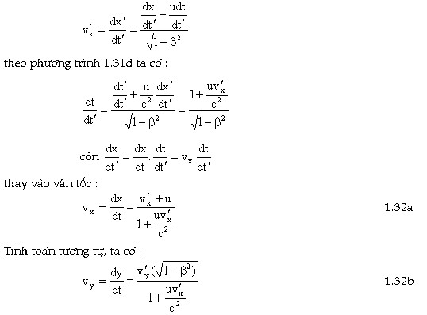
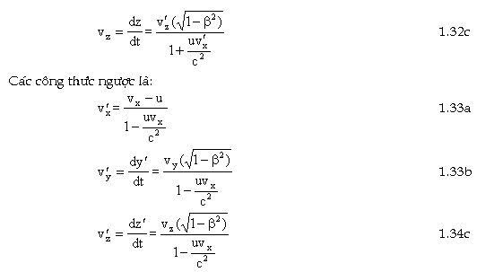
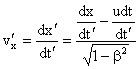
Chú ý: khi u nhỏ hơn rất nhiều so với c thì các công thức biến đổi Lorenzt quay trở về công thức cộng Galileo.
3. Giải thích thí nghiệm Fizeau bằng công thức biến đổi Lorentz
Fizeau thực hiện thí nghiệm vào năm 1951 với mục đích là đo vận tốc ánh sáng trong môi trường chuyển động. Ta biết vận tốc của ánh sáng trong một môi trường có chiết suất n bằng v=c/n. Nếu ánh sáng truyền trong môi trường mà bản thân môi trường lại chuyển động với vận tốc u khá lớn gần với vận tốc ánh sáng thì tốc độ truyền của ánh sáng trong môi trường đó so với hệ qui chiếu đứng yên sẽ thay đổi.
Mô tả: Một tia sáng đơn sắc đi từ nguồn sáng laser A đến bản nửa phản xạ và nửa truyền qua B chia làm hai tia. Hệ tia phản xạ BKDEB sau khi phản xạ trên gương B một lần nữa đi vào máy giao thoa F. Hệ tia truyền qua và phản xạ BEDKB sau khi truyền qua gương B một lần nữa đi vào cùng đi vào máy giao thoa F. Hai tia sáng kể trên đi qua một quãng đường như nhau nhưng các tia sáng khi đi qua quãng đường KD và BE thì truyền qua chất lỏng. Nếu môi trường chất lỏng đứng yên thì hiệu quang trình của hai tia sáng vào F là như nhau. Tuy nhiên trong thí nghiệm thì môi trường là đang chuyển động với vận tốc u (hình 1.7) Ðiều nầy làm cho hiệu quang trình của hai tia sáng vào F là thay đổi, dẫn đến sự lệch của vân sáng trung tâm. Ðo độ lệch của vân sáng trung tâm, ta có thể tính lại hiệu quang trình của hai tia. Nếu đo chính xác các khỏang cách KD và BF ta sẽ xác định vận tốc truyền ánh sáng trong chất lỏng đối với hệ qui chiếu đứng yên.
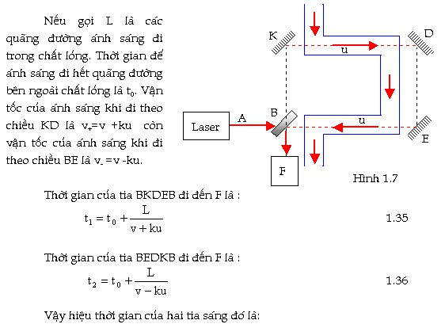
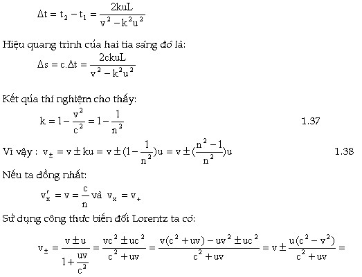
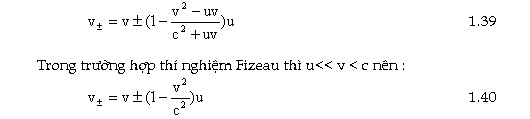
Vậy ta kết luận vận tốc ánh sáng trong các môi trường luôn tuân theo công thức cộng vận tốc Lorentz.
4. Hệ qủa:
Chúng ta dùng công thức biến đổi Lorentz để kiểm lại sự biến đổi về thời gian, độ dài trong các đồng hồ không đồng bộ
a) Sự trễ về thời gian
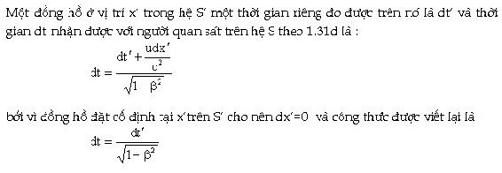
Ðây là công thức trễ về thời gian của cùng một quá trình trong hai hệ qui chiếu quán tính khác nhau.
b) Sự co lại của khỏang cách:
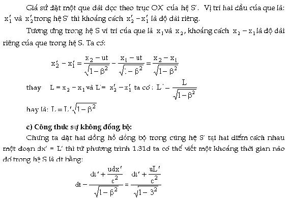
Khi khoảng thời gian dt trong hệ S co về 0 (có nghiã là có hai đồng hồ chạy đồng bộ trong hệ S) thì từ dt =0 ta suy ra:
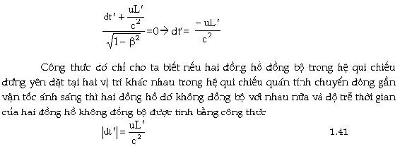